策略模板中不同的防御功能支持单独开启开关，开启后可配置检测阈值和防御动作；当触发防御动作后，可通过勾选“黑名单”选项将源IP加入DOS防护动态黑名单。
策略模板可配置以下不同协议的防护策略：
l基于IP协议的防护策略
当防火墙在单位时间内检测到向某IP主机发送报文的个数达到或超过了指定的检测阈值时，即判定为发生了IP Flood攻击。
进入“自定义模板”页签，点击策略模板“操作”栏的“编辑配置”，弹出“查看”窗口，默认展示“IP”防御策略配置页面。如下图所示。
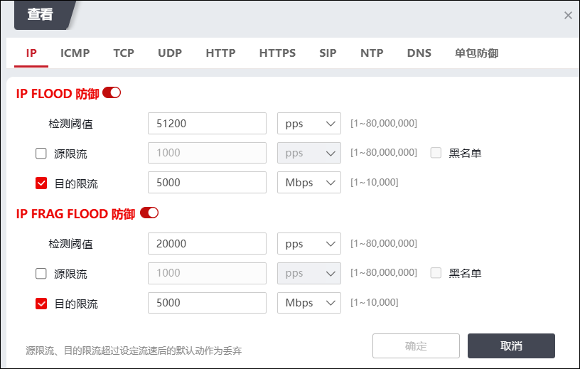
在设置IP防御及防御策略时，各项参数的具体说明如下表所示。
检测项 |
说明 |
|---|---|
IP Flood防御 |
设置进行IP Flood防御的阈值。单位：pps/bps/Kbps/Mbps。 检测到IP Flood攻击后，支持的防御动作包括IP源限流和IP目的限流。 1）IP源限流。 对于执行IP Flood攻击的源IP主机，设置允许其发送报文至防护对象的最大速率；当发往防护对象的该源IP主机发送的IP流量超过IP源限流速率时，系统将按设定的阈值进行限流操作或将源IP地址加入黑名单。单位：pps/bps/Kbps/Mbps。 勾选“黑名单”选项可执行加入DOS防护动态黑名单动作。 2）IP目的限流。 设置目的IP主机允许通过的报文的速率。当到目的IP的所有IP流量超过IP目的限流速率时，系统将按设定的阈值进行限流操作。单位：pps/bps/Kbps/Mbps。 |
IP Frag Flood防御 |
设置进行IP Frag Flood防御的阈值。单位：pps/bps/Kbps/Mbps。 检测到IP Frag Flood攻击后，支持的防御动作包括IP源限流和IP目的限流。 1）IP Frag 源限流。 对于执行IP Frag Flood攻击的源IP主机，设置允许其发送报文至防护对象的最大速率；当发往防护对象的该源IP主机发送的IP流量超过IP源限流速率时，系统将按设定的阈值进行限流操作或将源IP地址加入黑名单。单位：pps/bps/Kbps/Mbps。 勾选“黑名单”选项可执行加入DOS动态黑名单动作。 2）IP Frag 目的限流。 设置目的IP主机允许通过的报文的速率。当到目的IP的所有IP流量超过IP目的限流速率时，系统会将其丢弃。单位：pps/bps/Kbps/Mbps。 |
|
²阈值表示服务器能处理的每秒访问数。当对目的服务器的访问量达到该服务器阈值时，该服务器可能受到攻击，DDoS防护模块开始监视。 ²设置阈值时，单位“pps”表示包数/秒，是针对报文数的统计单位；“bps/Kbps/Mbps”分别表示比特/秒、千比特/秒和兆比特每秒，是针对流量带宽的统计单位。 ²限流是产生攻击之后的一种防御手段，NGFW会按照指定的限流阈值对到达指定目的的总流量进行限制。 |

l基于ICMP协议的防护策略
ICMP Flood攻击指在短时间内通过向被攻击者发送大量的ICMP请求，消耗被攻击者的资源来进行响应，直至被攻击者再也无法处理有效的网络信息流时，就发生了ICMP泛滥。
进入“自定义模板”页签，点击策略模板“操作”栏的“编辑配置”，弹出“查看”窗口，选择“ICMP”防御策略配置页面。如下图所示。
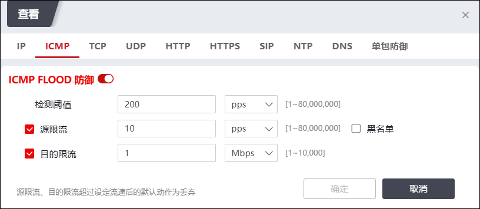
在设置ICMP防御及防御策略时，各项参数的具体说明如下表所示。
检测项 |
说明 |
|---|---|
ICMP Flood防御 |
设置进行ICMP Flood防御的阈值。 当对目的服务器进行的请求的ICMP报文数超过阈值时被认定为有ICMP攻击。 1）单位：单位：pps/bps/Kbps/Mbps。 2）防御动作为ICMP源限流、ICMP目的限流，限流是产生攻击之后的一种防御手段，到达指定目的的总流量会按照指定的限流阈值进行限制。 （a）ICMP源限流。 系统将按设定的阈值限流或将源IP地址加入黑名单。单位：pps/bps/Kbps/Mbps。 勾选“黑名单”选项可执行加入DOS动态黑名单动作。 （b）ICMP目的限流。 系统将按设定的阈值对目的IP进行限流。单位：pps/bps/Kbps/Mbps。 勾选“黑名单”选项可执行加入DOS动态黑名单动作。 |
l基于TCP协议的防护策略
TCP类的Flood攻击根据TCP标记位和连接进行定义，包括TCP Flood、SYN Flood、FIN Flood、RST Flood、SESSION Flood等，这些攻击会导致服务器的特殊回应（如消耗资源），从而达到攻击的目的。TCP类的Flood防御主要是根据特征报文的数量以及连接的行为进行判断的。
进入“自定义模板”页签，点击策略模板“操作”栏的“编辑配置”，弹出“查看”窗口，选择“TCP”防御策略配置页面。如下图所示。
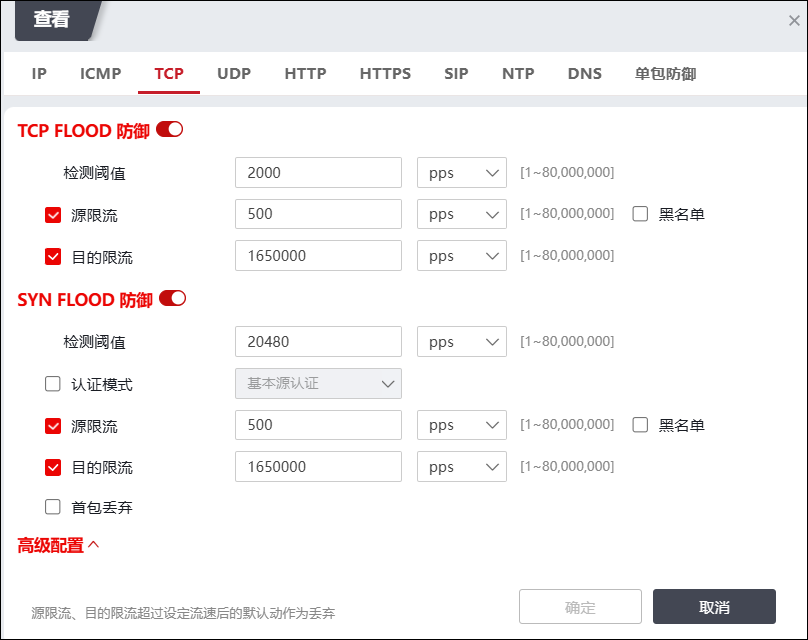
在设置TCP防御和防御策略时，各项参数的具体说明如下表所示。
检测项 |
说明 |
|---|---|
TCP Flood防御 |
基于TCP报文数量的攻击行为。设置进行TCP Flood防御的阈值。 单位：pps/bps/Kbps/Mbps。 检测到TCP Flood攻击后，支持的防御动作包括源限流、目的限流。 |
SYN Flood防御 |
设置进行SYN Flood防御的阈值。 SYN标志：连接请求标志。SYN Flood利用TCP协议缺陷（由于资源的限制，服务器只能允许有限个TCP连接），伪造一个SYN报文，将其源地址设置成伪造的或者不存在的地址，然后向服务器发起连接。服务器在收到报文后用SYN-ACK应答，而此应答发出去后，不会收到ACK报文，从而造成半连接。若攻击者发送大量这样的报文，会在目的服务器上出现大量的半连接，直到半连接超时，从而耗尽其资源，使正常的用户无法访问。 当目的服务器收到的每秒TCP请求超过设置的阈值时，开始对同一源地址进行防御监控。 单位：pps/bps/Kbps/Mbps。 检测到SYN Flood攻击后，支持的防御动作包括源限流、目的限流、首包丢弃、SYN源认证。 lSYN源认证。 认证模式：基本模式、高级模式、syncookie源认证。 1）基本模式：即乱序认证，回应乱序报文。防护设备收到SYN报文后，会回应一个包含cookie的错误序列号的ACK报文，真实IP客户端收到后，会终止当前请求，回应一个reset报文，重新发送请求。cookie中包含了TCP流的一些特征，例如五元组、TTL等信息，若IP地址被假冒，很难通过认证。 优点：这种认证方式对用户透明，不会返回错误，不需要客户端刷新连接； 缺点：若被假冒的IP是有效的，会回应reset。此类问题可以通过把TTL加入到cookie中进行增强验证，但也存在认证失效的可能。 2）高级模式：即增强认证，防护设备与请求者进行三次握手认证，认证通过后，主动reset连接，客户端的后续请求正常通过。 优点：认证结果真实有效，假冒IP通过认证的概率可以忽略； 缺点：对一些软件可能不透明，客户端软件可能会报错，需要重新请求。 3）syncookie源认证：在TCP服务器接收到TCP SYN包并返回TCP SYN + ACK包时，不分配一个专门的数据区，而是根据这个SYN包计算出一个cookie值。这个cookie作为将要返回的SYN ACK包的初始序列号。当客户端返回一个ACK包时，根据包头信息计算cookie，与返回的确认序列号(初始序列号 + 1)进行对比，如果相同，则是一个正常连接，然后，分配资源，建立连接。 |
ACK Flood防御 |
在TCP连接建立之后，所有的数据传输TCP报文都是带有ACK标志位的，主机在接收到一个带有ACK标志位的数据包时，需要检查该数据包所表示的连接四元组是否存在，若存在则检查该数据包所表示的状态是否合法，然后再向应用层传递该数据包。 设置进行ACK FLOOD防御的阈值。 单位：pps/bps/Kbps/Mbps；取值范围：单位为pps时取值范围：1-80000000；单位为bps时，取值范围：1-2000000000；单位为Kbps时，取值范围：1-10000000；单位为Mbps时，取值范围：1-10000。 在TCP连接建立并进行状态检测后，执行ACK FLOOD防御，支持的防御动作包括源限流、目的限流、会话检查。支持对源IP和会话检查添加DOS动态黑名单。 |
SYN-ACK防御 |
SynACK（选择性应答），可以提高某些网络中所有可用带宽的使用效率，即提高吞吐量。但是，对于TCP发送方而言，处理这类应答严重占用CPU，这个缺陷常被攻击者利用来制造恶意攻击。 设置进行SynACK Flood防御的阈值。 单位：pps/bps/Kbps/Mbps；取值范围：不同单位，取值范围不认同，单位为pps时取值范围：1-80000000；单位为bps时，取值范围：1-2000000000；单位为Kbps时，取值范围：1-10000000；单位为Mbps时，取值范围：1-10000。 执行SYNACK Flood防御后，支持的清洗动作包括SYN-ACK源认证、源限流、目的限流、首包丢弃、会话检查。支持对源IP和会话检查添加DOS动态黑名单。 |
FIN Flood防御 |
FIN标志：连接拆除标志。 设置进行FIN Flood防御的阈值。 在TCP连接建立并进行状态检测后，执行FIN Flood防御，支持的防御动作包括源限流、目的限流、会话检查。支持对源IP和会话检查添加DOS动态黑名单。 |
RST Flood防御 |
TCP交互过程中还存在FIN和RST报文，其中FIN报文用来关闭TCP连接，RST报文用来断开TCP连接。这两种报文可能会被攻击者利用来发起DDoS攻击，导致目标服务器资源耗尽，无法响应正常的请求。 设置进行RST Flood防御的阈值。 在TCP连接建立并进行状态检测后，执行RST Flood防御，支持的防御动作包括源限流、目的限流、会话检查。支持对源IP和会话检查添加DOS动态黑名单。 |
FRAG FLOOD防御 |
设置进行TCP ABNORMAL FLAG FLOOD防御的阈值，ABNORMAL FLAG是指TCP头部的Flags标记位不是1，攻击者通过发送这种畸形包来攻击目标的程序漏洞。 支持的处理动作：源限流、目的限流、会话检查。支持对源IP和会话检查添加DOS动态黑名单。 |
连接耗尽防御 |
攻击者获取一个有效的SESSION ID（标识符）后，伪装成该合法用户发送大量新建连接请求达到目的服务器拒绝服务的攻击目的。检测到攻击后，支持的防御动作包括源/目的速率限制、源/目的并发限制。 1）检测速率阈值：设置进行防御的阈值。单位：cps；取值范围：1-80000000。 2）检测并发阈值：设置进行防御的阈值。单位：connections；取值范围：1-80000000。 3）异常源检查：开启后可设置判定异常源的阈值，可设置项有异常源速率阈值、异常源并发阈值、异常源会话阈值。 4）源/目的速率/并发限制：设置执行限制的速率/并发值。勾选“黑名单”选项可执行加入DOS动态黑名单。 |
l基于UDP协议的防护策略
UDP是一种无连接的协议，而且不需要用任何程序建立连接来传输数据。UDP Flood是当前比较流行的拒绝服务攻击的方式之一。攻击者通过发送大量的含有UDP数据报的IP封包，以至于受害者再也无法处理有效的连接时，就发生了UDP泛滥。
进入“自定义模板”页签，点击策略模板“操作”栏的“编辑配置”，弹出“查看”窗口，选择“UDP”防御策略配置页面。如下图所示。
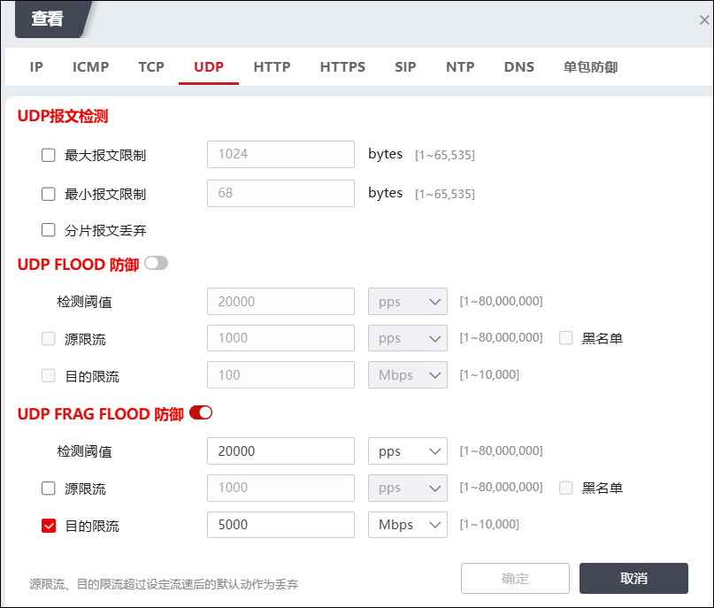
在设置UDP防御与防御策略时，各项参数的具体说明如下表所示。
检测项 |
说明 |
|---|---|
UDP报文检测 |
设置UDP报文的大小范围。 1）UDP最大报文限制。 取值范围：1-65535；默认值：1024。 2）UDP最小报文限制。 取值范围：1-65535；默认值：68。 3）分片报文丢弃：勾选后对去往同一个目的地址的所有UDP分片报文进行丢弃。 |
UDP Flood防御 |
设置进行UDP Flood防御的阈值。 单位：pps/bps/Kbps/Mbps。 当目的服务器收到的每秒UDP报文超过设置的阈值时，防火墙开始对UDP报文进行防御监控，执行动作包括源/目的限流。勾选“黑名单”选项可执行加入DOS动态黑名单。 |
UDP Frag Flood防御 |
设置进行UDP Frag Flood防御的阈值。 单位：pps/bps/Kbps/Mbps。 当目的服务器收到的每秒UDP报文超过设置的阈值时，防火墙开始对UDP报文进行防御监控，执行动作包括源/目的限流。勾选“黑名单”选项可执行加入DOS动态黑名单。 |
l基于HTTP协议的防护策略
HTTP攻击是基于HTTP协议，针对HTTP服务器、客户端或者代理发起的攻击。
进入“自定义模板”页签，点击策略模板“操作”栏的“编辑配置”，弹出“查看”窗口，选择“HTTP”防御策略配置页面。如下图所示。
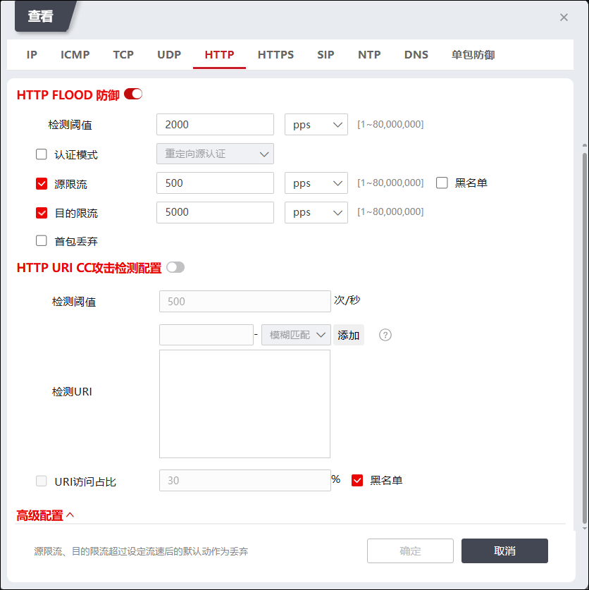
在设置HTTP防御与防御策略时，各项参数的具体说明如下表所示。
检测项 |
说明 |
|---|---|
HTTP Flood防御 |
设置HTTP Flood防御的阈值。流量速率阈值单位：pps/bps/Kbps/Mbps；防御动作可选项：认证模式、源/目的限流、首包丢弃。勾选“黑名单”选项可执行加入DOS动态黑名单。 1）认证模式：当发现HTTP报文数超过检测阈值时，说明发生了HTTP FLOOD攻击，可启用HTTP源认证进行防御。认证方式包括：重定向源认证、cookie源认证、js源认证、验证码源认证。 2）首包丢弃：勾选后会丢弃第一个会话包。 |
HTTP URI CC防御 |
CC攻击是模拟多个用户不停的访问Web服务器上那些需要大量数据操作（即需要CPU长时间处理)的页面，进而导致Web服务器CPU长时间高负荷运转直至宕机，以达到攻击目的。 支持的防御方式：HTTP URI访问占比检查。 1）检测阈值：设置在单位时间内可访问的最大值，单位：次/秒。 2）检测URI：设置检测路径，在左侧文本框中输入需检测的URI,右侧复选框可选择匹配方式，可选择模糊匹配或完全匹配，点击“添加”设置的URI和匹配方式将添加到下方检测文本框中。其中完全匹配为精准匹配，模糊匹配，即包含设置的URI则匹配成功。 3）URI访问占比：客户端访问指定URI比例上限的单位：%；取值范围：1-100；默认值：30。执行动作：加黑名单。 |
HTTP连接耗尽检测 |
新建连接Flood攻击指的是攻击者发起新连接的速率很快，短时间内发出大量的新连接，达到占用服务器的连接，使服务器资源耗尽的目的。 1）检测速率阈值：设置Flood攻击的新建连接阈值。单位：cps。 2）检测并发阈值：设置Flood攻击的并发连接阈值。单位：connections。 3）慢速攻击检查：勾选后可继续选择检查项，可选：slow header、slow post，发现慢速攻击将执行加入黑名单动作。 4）源/目的速率/并发限制：设置执行的限制阈值，勾选“黑名单”选项可执行加入DOS动态黑名单。 |
l基于HTTPS协议的防护策略
HTTPS，即安全超文本传输协议，是具有安全性的SSL加密传输协议。通常网站是用cookies记住和验证用户的身份，若攻击者获取用户的cookies，则用户的账号、密码等信息都会被泄露。
进入“自定义模板”页签，点击策略模板“操作”栏的“编辑配置”，弹出“查看”窗口，选择“HTTPS”防御策略配置页面。如下图所示。
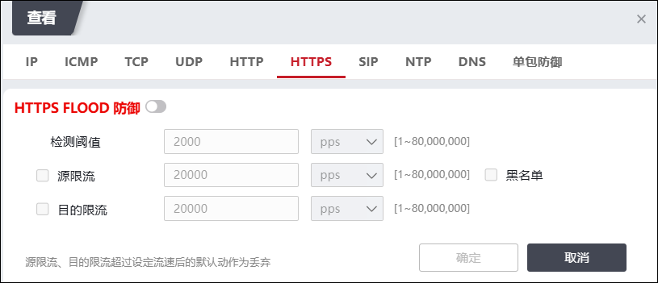
在设置HTTPS防御与防御策略时，各项参数的具体说明如下表所示。
检测项 |
说明 |
|---|---|
HTTPS Flood防御 |
设置HTTPS Flood防御的阈值。流量速率阈值单位：pps/bps/Kbps/Mbps；防御动作可选项：源限流、目的限流。勾选“黑名单”选项可执行加入DOS动态黑名单。 |
l基于SIP协议的防护策略
SIP协议，即会话启动协议，是在IP网络上进行多媒体通信的应用层控制协议，用于创建、修改和终结多媒体会话。多媒体会话指的是所有的因特网上交互式双方或者多方的多媒体通信活动，如Internet多媒体会议、远程教育等。
进入“自定义模板”页签，点击策略模板“操作”栏的“编辑配置”，弹出“查看”窗口，选择“SIP”防御策略配置页面。如下图所示。
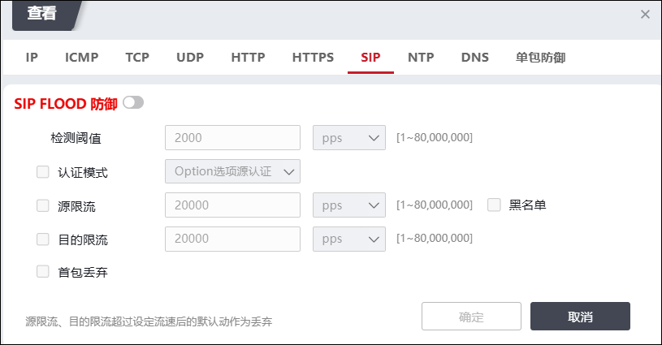
在设置SIP防御与防御策略时，各项参数的具体说明如下表所示。
检测项 |
说明 |
|---|---|
SIP Flood防御 |
设置SIP Flood防御的阈值。流量速率阈值单位：pps/bps/Kbps/Mbps；防御动作可选项：认证模式、源限流、目的限流、首包丢弃。勾选“黑名单”选项可执行加入DOS动态黑名单。 |
l基于NTP协议的防护策略
NTP协议，即网络时间协议，是用来使网络中的各个计算机时间同步的一种协议。它的用途是把计算机的时钟同步到世界协调时UTC，其精度在局域网内可达0.1ms，在互联网上绝大多数的地方其精度可以达到1-50ms。
NTP攻击基于NTP协议，攻击者通过发送大量的伪造NTP报文，占用服务器带宽使其阻塞，达到NTP报文洪水攻击的目的。
进入“自定义模板”页签，点击策略模板“操作”栏的“编辑配置”，弹出“查看”窗口，选择“NTP”防御策略配置页面。如下图所示。
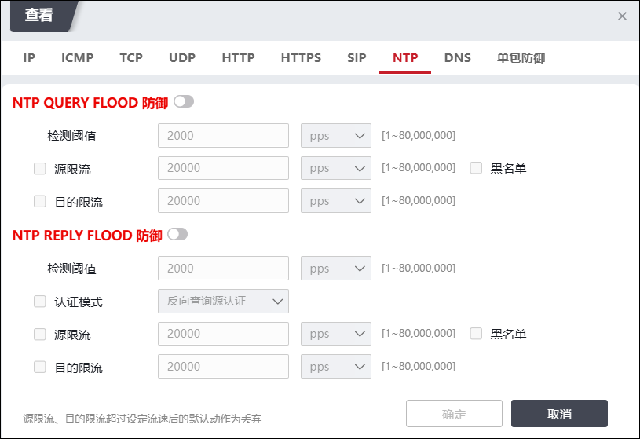
在设置NTP防御与防御策略时，各项参数的具体说明如下表所示。
检测项 |
说明 |
|---|---|
NTP REQUEST FLOOD防御 |
请求报文的数量阈值。 单位：pps/bps/Kbps/Mbps。 超过阈值时，执行NTP防护策略：NTP请求源限流、NTP请求目的限流。勾选“黑名单”选项可执行加入DOS动态黑名单。 |
NTP REPLY FLOOD防御 |
响应报文的数量阈值。 单位：pps/bps/Kbps/Mbps。 超过阈值时，执行防护策略，支持的执行动作：认证模式、源限流、目的限流。支持对源IP和会话检查添加DOS动态黑名单。 |
l基于DNS协议的防护策略
DNS攻击主要分为洪水型攻击、畸形包攻击和投毒攻击。其中，最常见的是洪水型攻击，即当DNS报文超过DNS服务器的处理能力时，服务器性能和资源被极度消耗，不能继续提供正常的DNS服务。
进入“自定义模板”页签，点击策略模板“操作”栏的“编辑配置”，弹出“查看”窗口，选择“DNS”防御策略配置页面。如下图所示。
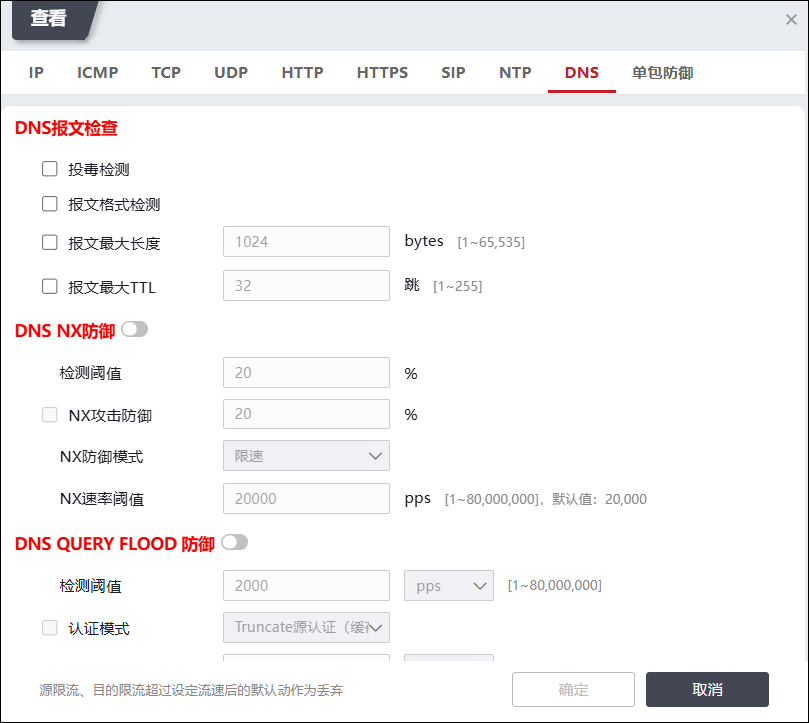
在设置DNS防御与防御策略时，各项参数的具体说明如下表所示。
检测项 |
说明 |
|---|---|
DNS报文检查 |
设置DNS报文检查项，支持的配置项：投毒检测、报文格式检测、报文最大长度、报文最大TTL。 DNS投毒：攻击者将DNS域名和恶意的IP对应关系注入到DNS缓存服务器上，导致缓存服务器对后续的请求响应为恶意的IP地址，将正常的用户流量牵引到恶意网站等。 防范DNS投毒：需要检查回应报文的真实性，必须在存在相应的DNS请求且请求问题与回应问题完全一致时，才能确认回应报文一个真实的应答报文。所以，防范DNS投毒需要建立DNS会话，记录DNS请求的信息，用来检查回应报文。该防范方式不需要设置检测异常阈值，配置该防范后，对所有的DNS请求报文建立会话，对DNS回应报文查找会话并检查会话信息，未查到会话或回应报文与会话记录的信息不一致时直接丢弃报文。 报文格式检测：配置该功能后，设备对使用该模板的所有受保护IP开始格式检查，DNS报文格式不符合RFC规定时直接丢弃报文。 |
DNS NX异常比率检测 |
设置NX异常检测项。 1）检测阈值：统计同一个保护目的在一段时间内发出的NX报文占发出的总报文的比重，单位：%；取值范围：1-100；默认值：20。超过阈值时，判定为NX异常。 2）NX攻击防御：设置执行NX攻击防御的阈值，设置后需选择NX防御模式，可选项：限速、黑名单。选择“黑名单”可执行添加DOS动态黑名单动作；选择“限速”需配置“NX速率阈值”。 |
DNS QUERY FLOOD防御 |
设置DNS QUERY FLOOD防御的阈值。 执行DNS query Flood防御后，支持的防御动作包括：cname源认证、truncate源认证、源限流、目的限流、首包丢弃、指定域名限速。 说明： 大量的DNS请求攻击，超出DNS服务器的负荷承载能力，使得正常的请求得不到处理。 勾选“黑名单”可执行添加DOS动态黑名单动作。 防御动作勾选“指定域名限速”时，当受保护IP遭到DNS Flood攻击，启动域名限流。关于QUERY域名限流的设置具体请参见 DNS域名限流配置。 |
DNS REPLY FLOOD防御 |
设置进行DNS reply Flood防御的阈值。 执行DNS REPLY Flood防御后，支持的防御动作包括：反向查询源认证、源限流、目的限流、反射检查、反射加入黑名单、首包丢弃、指定域名限速。 说明： 大量的DNS应答攻击，超出DNS服务器的负荷承载能力，使得正常的请求得不到处理。 反射检查：根据DNS REPLY反射攻击的原理（通过伪造DNS请求报文的源IP地址，控制DNS回应报文的流向，这些DNS回应报文就会都被引导至被攻击目标，导致被攻击目标的网络拥塞，拒绝服务），当DNS REPLY报文数超过DNS REPLY FLOOD检测阈值时，可开启DNS REPLY反射防御开关，直接丢弃DNS REPLY报文，抵御DNS REPLY FLOOD攻击。 防御动作勾选“指定域名限速”时，当受保护IP遭到DNS Reply Flood攻击，启动域名限流。关于REPLY域名限流的设置具体请参见 DNS域名限流配置。 |
1）点击“指定域名限速”后的“”，弹出“DNS QUERY/REPLY 域名限速”窗口。
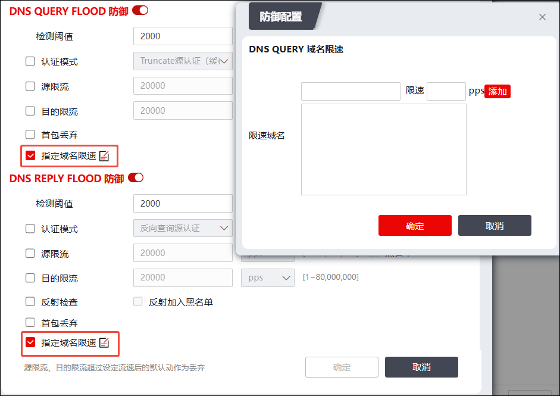
在设置DNS域名防御规则时，各项参数的具体说明如下表所示。
参数 |
说明 |
|---|---|
限速域名 |
域名格式为rfc格式：xxx.xxx.xxx.xx。限速：设置单位时间内对域名的访问请求次数，单位：pps。点击【添加】按钮可添加至“限速域名”框中。 说明： 1）域名字符串必须包含在以下字符中： （a）26个英文字母； （b）0，1，2，3，4，5，6，7，8，9； （c）英文中的连词号“-”； 2）必须以字母开始，字母或数字结束；标签（两个“.”之间的部分）长度不能超过63；整个域名长度不能超过255。 符合以上形式和规则的域名都是符合规范的rfc格式的域名。 比如天融信的域名为：topsec.com.cn。 |
2）点击【添加】按钮完成一条域名防御规则的添加。添加完成后，点击【确定】按钮。
l基于单包防御的防护策略
单包攻击主要分为三类：扫描窥探攻击、畸形报文攻击、特殊报文攻击。
进入“自定义模板”页签，点击策略模板“操作”栏的“编辑配置”，弹出“查看”窗口，选择“单包防御”策略配置页面。如下图所示。
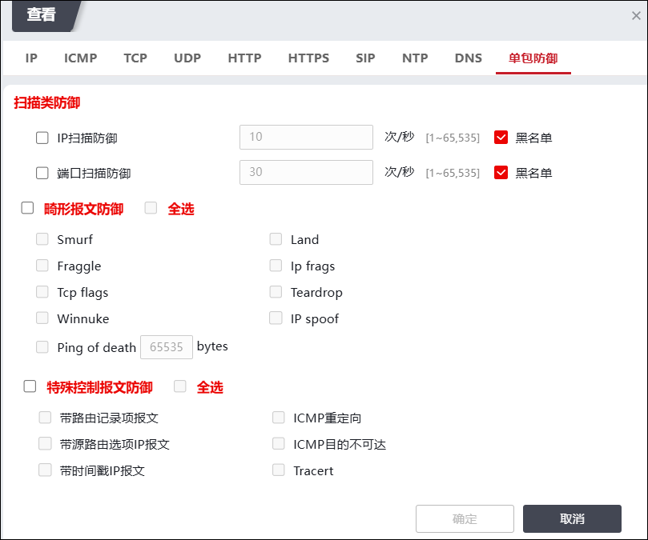
在设置单包防御策略时，各项参数的具体说明如下表所示。
检测项 |
说明 |
|---|---|
扫描类防御 |
扫描类防御支持设置IP扫描和端口扫描的阈值，设置后，达到阈值的源IP会加入DOS动态黑名单。 |
畸形报文防御 |
设置畸形报文检测项，可全部勾选或部分勾选相关的检测项，当检测到攻击发生时，会进行阻断。 |
特殊控制报文防御 |
设置特殊控制报文的检测项，可全部勾选或部分勾选相关的检测项，勾选后会阻断相应的报文。 |